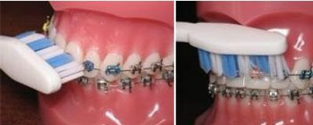

Bagues
Appareil fixe

À quoi ça sert ?
Aligner les dents.
Quand le porter ?
Fixées en permanence.
À retenir
- Brossez 3 minutes après chaque repas.
- Brossez le haut et le bas séparément, au-dessus et en dessous des attaches.
- Avec la pointe de la brosse, faites des petits ronds sur chaque attache, puis brossez de la gencive vers la dent.
- Après un rendez-vous, les dents sont sensibles : un Doliprane peut soulager, suivez la notice.
À éviter
- Chewing-gum, caramel, bonbons durs ou collants
- Croûtons et sandwichs baguette (le pain de mie, c'est mieux)
- Croquer dans une pomme ou un fruit à noyau : coupez en morceaux
- Mordiller les stylos ou se ronger les ongles
Entretien
Mâchez doucement avec les dents du fond.
La règle d'or
Une bague décollée ? Rapportez-la au prochain rendez-vous.
Bague perdue : 25 €